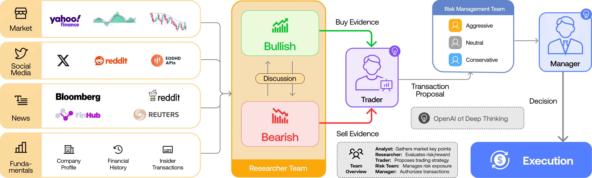

项目来源
代码结构与多智能体思路参考开源项目 TauricResearch/TradingAgents（仅作案例陈列，不调用其 Python 运行时）。

本站是一个面向美股市场宏观分析的个人项目主页，以「数据可追溯、判断有边界」为基本要求。
代码结构与多智能体思路参考开源项目 TauricResearch/TradingAgents（仅作案例陈列，不调用其 Python 运行时）。

首期内容来自 IMA 知识库中 121 知识库 的最新宏观研报，由人工提炼为结构化 JSON 后嵌入，确保站点纯静态可发布。
每篇研报输出六要素：分类 · 原文 · 观点 · 逻辑 · 数据 · 结论。所有数据点均标注来源，未对原文进行二次分发。
围绕宏观研报阅读与判断需要，逐项拆解关键能力。
来源：IMA 121 知识库（公开媒体摘录形式）/ NeoData 公开行情数据。每篇报告均含原文摘录、核心观点、逻辑链、关键数据可视化与结论。
正在加载研报…
仅保留可公开渠道，不收集任何隐私信息。
请勿在公开仓库留下 API Key、邀请码或个人微信号。